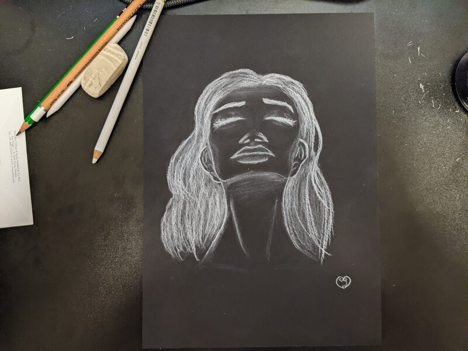

About Sweet Cheonsa

Meet Sweet Cheonsa, a French artist who embarked on a creative journey that spans continents and emotions.
Born and raised in the picturesque landscapes of France, Sweet Cheonsa recently made her way to the vibrant shores of Australia, embracing a new chapter in her artistic career.
From the tender age of 10, Sweet Cheonsa discovered her love for drawing and the enchanting world of creativity.
Her passion for crafting and bringing her imagination to life was evident from the very beginning.
She nurtured her skills through a combination of art books, closely observing the work of fellow artists, and immersing herself in the captivating narratives of animation movies.
Music, art, nature, books, and many more have played a profound role in kindling the flames of her creativity.
They served as a constant source of motivation, fueling her desire to create beautiful and meaningful art that resonates with the heart and soul.
Yet, Sweet Cheonsa had to face some challenges that would change here life forever.
Suddenly, the spark to draw seemed to vanish, leaving her with a profound sense of emptiness.
For years, she grappled with the darkness created by mental and physical health issues.
She felt lost and isolated.
But Sweet Cheonsa's story takes a courageous turn.
She emerged from this abyss, drawing strength from her own resilience.
As she resumed her artistic journey, she discovered the capacity to express the deeper, more serious, and darker facets of human emotions through her art.
With a newfound purpose, she sought to confront and communicate the intricate realities of mental and physical health issues.
Today, Sweet Cheonsa continues to wrestle with the ebb and flow of her creative spirit, struggling to draw as frequently as her younger self once did.
However, she remains steadfast in her determination not to abandon her artistic path.
Looking to the future, Sweet Cheonsa envisions a mission that is twofold.
She aspires to infuse the world with more light and beauty through her artwork, serving as a beacon of hope and inspiration.
Simultaneously, she is committed to raising awareness of the darker and more challenging aspects of life that all of us inevitably encounter.
In the juxtaposition of light and darkness, Sweet Cheonsa hopes to foster understanding, empathy, and healing in a world where art has the power to illuminate and console.
Sweet Cheonsa's story is one of resilience, determination, and a profound connection to the depths of human experience.
Through her art, she weaves a rich tapestry that invites you to journey with her as she strives to bring both beauty and awareness to the canvas of life.
